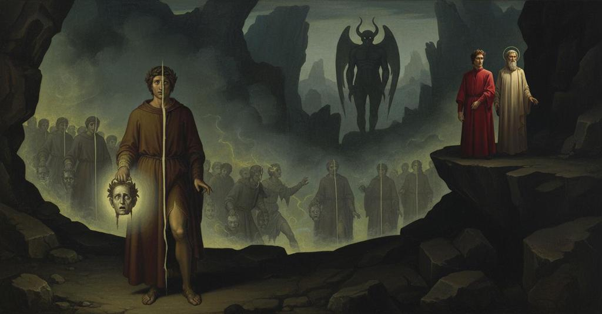

Inferno — Canto 28

Nella nona bolgia Dante vede i seminatori di scandalo e scisma, mutilati senza fine dalla spada di un demonio, ascolta Maometto e Pier da Medicina con le loro profezie, incontra Mosca e Bertram dal Bornio, puniti per le discordie seminate. In the ninth ditch Dante sees the sowers of scandal and schism, endlessly mutilated by a demon’s sword, hears Muhammad and Pier da Medicina with their prophecies, and meets Mosca and Bertram dal Bornio, punished for the discord they sowed. 第九の濠でダンテは、悪魔の剣に絶えず切り裂かれる不和と分裂の種を蒔いた者たちを見て、マホメットとピエール・ダ・メディチーナの予言を聞き、自らが蒔いた不和のために罰せられるモスカとベルトラン・ダル・ボルニオに出会う。
1
Chi poria mai pur con parole sciolte
Who could ever, even with words unbound,
誰が散文の言葉をもってしても、
2
dicer del sangue e de le piaghe a pieno
tell of the blood and of the wounds in full
私が今見た、血と傷のことを十分に語り尽くせようか、
3
ch’i’ ora vidi, per narrar più volte?
that I now saw, though telling it many times?
いくら語り重ねても。
4
Ogne lingua per certo verria meno
Every tongue for certain would come short
いかなる言葉も確かに及ばぬだろう、
5
per lo nostro sermone e per la mente
because of our speech and of our mind,
我々の言葉にとっても、知性にとっても、
6
c’hanno a tanto comprender poco seno.
which have too little room to comprehend so much.
それほどのことを理解するには器が小さすぎるのだ。
7
S’el s’aunasse ancor tutta la gente
If all the people were gathered together again
もし、かつて幸運な土地
8
che già, in su la fortunata terra
who once, upon the fated land
プーリアで、自らの血に
9
di Puglia, fu del suo sangue dolente
of Puglia, lamented for their blood
嘆いた人々がすべて集まったとしても、
10
per li Troiani e per la lunga guerra
shed by the Trojans and because of the long war
トロイア人のため、また、
11
che de l’anella fé sì alte spoglie,
that made of the rings such a high spoil,
指輪で非常に多くの戦利品を得た長き戦いのために、
12
come Livïo scrive, che non erra,
as Livy writes, who does not err,
誤ることなきリウィウスが記すように、
13
con quella che sentio di colpi doglie
with those who felt the pain of blows
そして、ロベルト・グイスカルドに
14
per contastare a Ruberto Guiscardo;
for opposing Robert Guiscard;
立ち向かい、打ち傷の痛みを感じた者たち、
15
e l’altra il cui ossame ancor s’accoglie
and the other whose bones are still collected
そしてまた、その骨がいまだに集められる
16
a Ceperan, là dove fu bugiardo
at Ceprano, there where every Apulian
チェペラーノで、プーリア人が皆
17
ciascun Pugliese, e là da Tagliacozzo,
was a traitor, and there at Tagliacozzo,
嘘つきであった場所で、そしてタリアコッツォで、
18
dove sanz’ arme vinse il vecchio Alardo;
where without arms old Alardo won;
老アラルドが武器なしで勝利した場所で、
19
e qual forato suo membro e qual mozzo
and if some showed their limbs pierced and some lopped,
そして誰かが穴の開いた肢体を、誰かが切り落とされた肢体を見せたとしても、
20
mostrasse, d’aequar sarebbe nulla
it would be nothing to equal
それは第九の濠の不潔な有様には
21
il modo de la nona bolgia sozzo.
the foul fashion of the ninth ditch.
全く及ばないであろう。
22
Già veggia, per mezzul perdere o lulla,
A cask, by losing a middle or side stave,
樽の底板や側板を失って
23
com’ io vidi un, così non si pertugia,
is not split open as I saw one,
穴が開くように、私が一人の者を見たが、あれほど開くことはない、
24
rotto dal mento infin dove si trulla.
ripped from the chin to where one expels filth.
顎から屁をこくところまで裂かれていた。
25
Tra le gambe pendevan le minugia;
Between his legs the entrails were hanging;
両脚の間には内臓が垂れ下がり、
26
la corata pareva e ’l tristo sacco
the pluck was visible and the sad sack
心臓や肺が見え、そして飲み込んだものを
27
che merda fa di quel che si trangugia.
that makes shit of what is swallowed.
糞にする悲しい袋も見えた。
28
Mentre che tutto in lui veder m’attacco,
While I was all intent on seeing him,
私が彼をじっと見つめていると、
29
guardommi e con le man s’aperse il petto,
he looked at me and with his hands opened his breast,
彼は私を見て、両手で胸を開き、
30
dicendo: «Or vedi com’ io mi dilacco!
saying: "Now see how I rip myself apart!
言った、「さあ見よ、私が自分をいかに引き裂いているかを！
31
vedi come storpiato è Mäometto!
see how maimed is Muhammad!
見よ、マホメットがいかに無残な姿になっているかを！
32
Dinanzi a me sen va piangendo Alì,
Weeping before me goes Ali,
私の前をアリが泣きながら進み行く、
33
fesso nel volto dal mento al ciuffetto.
cleft in the face from the chin to the forelock.
顎から額の房毛まで顔を裂かれて。
34
E tutti li altri che tu vedi qui,
And all the others that you see here,
そして、お前がここにいる見る者たちは皆、
35
seminator di scandalo e di scisma
were sowers of scandal and of schism
生前は不和と分裂の種を蒔いた者たちで、
36
fuor vivi, e però son fessi così.
when they were alive, and so they are cleft thus.
それゆえにこのように裂かれているのだ。
37
Un diavolo è qua dietro che n’accisma
A devil is here behind who trims us up
ここに後ろに一人の悪魔がいて、我々を整える、
38
sì crudelmente, al taglio de la spada
so cruelly, putting to the sword's edge
まことに残酷に、剣の一太刀で、
39
rimettendo ciascun di questa risma,
each one of this company again,
この一団の者一人一人を再び裂き、
40
quand’ avem volta la dolente strada;
when we have circled the sorrowful road;
我々がこの悲しみの道を一周した時には。
41
però che le ferite son richiuse
because the wounds are closed up again
というのも、傷は癒えてしまうからだ、
42
prima ch’altri dinanzi li rivada.
before one passes before him again.
別の者が彼の前に再び進み出る前に。
43
Ma tu chi se’ che ’n su lo scoglio muse,
But who are you who muses on the ridge,
だが、お前は何者だ、岩の上で物思いにふけるとは、
44
forse per indugiar d’ire a la pena
perhaps to delay going to the punishment
おそらくは罰を受けに行くのを遅らせるためか、
45
ch’è giudicata in su le tue accuse?».
that is adjudged upon your own accusations?".
お前の罪状によって裁かれた罰を？」。
46
«Né morte ’l giunse ancor, né colpa ’l mena»,
"Neither death has reached him yet, nor does guilt lead him,"
「死はまだ彼に訪れておらず、罪が彼を導くのでもない」
47
rispuose ’l mio maestro, «a tormentarlo;
answered my master, "to his torment;
と我が師は答えた、「彼を苦しめるために。
48
ma per dar lui esperïenza piena,
but to give him full experience,
しかし、彼に完全な経験を与えるため、
49
a me, che morto son, convien menarlo
it falls to me, who am dead, to lead him
死者である私が、彼を導かねばならぬのだ、
50
per lo ’nferno qua giù di giro in giro;
through Hell down here from circle to circle;
この地獄を圏から圏へと。
51
e quest’ è ver così com’ io ti parlo».
and this is as true as that I speak to you".
そしてこれは、私が君に語るのと同じくらい真実なのだ」。
52
Più fuor di cento che, quando l’udiro,
More than a hundred there were who, when they heard him,
百人以上の者が、それを聞くと、
53
s’arrestaron nel fosso a riguardarmi
stopped in the ditch to gaze at me
濠の中で立ち止まり、私を見つめた、
54
per maraviglia, oblïando il martiro.
through wonder, forgetting their martyrdom.
驚きのあまり、苦しみを忘れて。
55
«Or dì a fra Dolcin dunque che s’armi,
"Now then, tell Fra Dolcino to arm himself,
「では、ドルチーノ修道士に告げよ、武装するようにと、
56
tu che forse vedra’ il sole in breve,
you who perhaps will see the sun shortly,
お前は、おそらくまもなく太陽を見るだろうから、
57
s’ello non vuol qui tosto seguitarmi,
if he does not wish to follow me here soon,
もし彼がすぐにここで私に続きたくないのなら、
58
sì di vivanda, che stretta di neve
so with provisions, that the grip of snow
食糧を十分に、さもないと雪の包囲が
59
non rechi la vittoria al Noarese,
may not bring victory to the Novarese,
ノヴァーラ人に勝利をもたらすだろう、
60
ch’altrimenti acquistar non saria leve».
which otherwise would not be easy to achieve".
さもなければ勝ち得るのは容易ではないだろうから」。
61
Poi che l’un piè per girsene sospese,
After he had raised one foot to leave,
去るために片足を上げたまま、
62
Mäometto mi disse esta parola;
Muhammad said this word to me;
マホメットは私にこの言葉を述べた。
63
indi a partirsi in terra lo distese.
then to depart he stretched it to the ground.
それから去るために、その足を地面に下ろした。
64
Un altro, che forata avea la gola
Another, who had his throat pierced
もう一人の者、喉を貫かれ
65
e tronco ’l naso infin sotto le ciglia,
and his nose cut off up to his eyebrows,
鼻を眉の下まで切り落とされ、
66
e non avea mai ch’una orecchia sola,
and had but a single ear,
片方の耳しか持たぬ者が、
67
ristato a riguardar per maraviglia
having stopped to look in wonder
驚きのあまり見つめようと立ち止まり
68
con li altri, innanzi a li altri aprì la canna,
with the others, before the others opened his windpipe,
他の者たちと共に、他の者たちの前で喉を開いた、
69
ch’era di fuor d’ogne parte vermiglia,
which on the outside was red all over,
その外側はあらゆる部分が真っ赤であった、
70
e disse: «O tu cui colpa non condanna
and said: “O you whom guilt does not condemn
そして言った、「おお、罪によって断罪されず、
71
e cu’ io vidi su in terra latina,
and whom I saw above on Latin land,
かつて私がラテンの地で見たお方よ、
72
se troppa simiglianza non m’inganna,
if too much likeness does not deceive me,
もしあまりに似ていることが私を欺かぬなら、
73
rimembriti di Pier da Medicina,
remember Pier da Medicina,
ピエール・ダ・メディチーナを思い出されよ、
74
se mai torni a veder lo dolce piano
if ever you return to see the sweet plain
もし汝がかの甘美なる平野を再び見ることがあれば、
75
che da Vercelli a Marcabò dichina.
that from Vercelli to Marcabò slopes down.
それはヴェルチェッリからマルカボへと下っていく。
76
E fa saper a’ due miglior da Fano,
And make it known to the two best men of Fano,
そしてファーノの二人の優れた者、
77
a messer Guido e anco ad Angiolello,
to messer Guido and also to Angiolello,
グイド殿と、そしてアンジョレッロ殿に知らせてくれ、
78
che, se l’antiveder qui non è vano,
that, if the foresight here is not in vain,
ここの予見が無駄でないのなら、
79
gittati saran fuor di lor vasello
they will be cast from their vessel
彼らは自分たちの舟から投げ出され、
80
e mazzerati presso a la Cattolica
and drowned in sacks near la Cattolica
カットーリカの近くで袋詰めにされ溺殺されるだろうと、
81
per tradimento d’un tiranno fello.
through the betrayal of a fell tyrant.
ある邪悪な暴君の裏切りによって。
82
Tra l’isola di Cipri e di Maiolica
Between the isle of Cyprus and of Majorca
キプロスとマヨルカの島の間で
83
non vide mai sì gran fallo Nettuno,
Neptune never saw so great a crime,
ネプトゥーヌスはこれほどの大罪を見たことがない、
84
non da pirate, non da gente argolica.
not by pirates, not by Argolic people.
海賊によっても、アルゴスの民によっても。
85
Quel traditor che vede pur con l’uno,
That traitor who sees with but one eye,
かの片目でしか見ぬ裏切り者が、
86
e tien la terra che tale qui meco
and holds the land that one here with me
そして、ここの私といる者が
87
vorrebbe di vedere esser digiuno,
would wish he had been fasting from the sight of,
見ることから断食したいと願うであろう地を支配しているが、
88
farà venirli a parlamento seco;
will have them come to a parley with him;
彼らを自分との会談に来させ、
89
poi farà sì, ch’al vento di Focara
then will so act, that for the wind of Focara
その後、フォカーラの風に対して
90
non sarà lor mestier voto né preco».
they will have no need of vow or prayer.”
彼らに誓願も祈りも必要なくなるようにするだろう」。
91
E io a lui: «Dimostrami e dichiara,
And I to him: “Show me and declare,
そして私は彼に言った、「私に示し、明らかにしてくれ、
92
se vuo’ ch’i’ porti sù di te novella,
if you wish me to carry news of you above,
もし汝が私に汝の知らせを上界へ運んでほしいのなら、
93
chi è colui da la veduta amara».
who is the one of the bitter sight.”
その苦い眺めを持つ者とは誰なのかを」。
94
Allor puose la mano a la mascella
Then he placed his hand on the jaw
すると彼は手を顎にかけ
95
d’un suo compagno e la bocca li aperse,
of a companion of his and opened his mouth,
仲間の一人の、そしてその口を開かせた、
96
gridando: «Questi è desso, e non favella.
shouting: “This is he, and he does not speak.
叫びながら、「これこそがその者、そして彼は話さない。
97
Questi, scacciato, il dubitar sommerse
This man, when exiled, submerged the doubt
この者は、追放された時、カエサルのうちの
98
in Cesare, affermando che ’l fornito
in Caesar, affirming that the one prepared
疑いを沈めたのだ、備えある者にとって
99
sempre con danno l’attender sofferse».
always suffered from delay with harm.”
待つことは常に損害を伴うと断言して」。
100
Oh quanto mi pareva sbigottito
Oh how dismayed he seemed to me,
おお、私にはどれほど狼狽しているように見えたことか、
101
con la lingua tagliata ne la strozza
with his tongue cut in his gullet,
喉の奥で舌を切り取られて、
102
Curïo, ch’a dir fu così ardito!
Curio, who was so bold in speech!
かくも大胆に語ったクーリオが！
103
E un ch’avea l’una e l’altra man mozza,
And one who had both his hands lopped off,
そして両手を切り落とされた者の一人が、
104
levando i moncherin per l’aura fosca,
raising the stumps through the dusky air,
その切り株を暗い大気の中に持ち上げ、
105
sì che ’l sangue facea la faccia sozza,
so that the blood made his face filthy,
その血が顔を汚していた、
106
gridò: «Ricordera’ti anche del Mosca,
shouted: 'You will remember Mosca, too,
叫んだ、「お前はモスカのことも思い出すだろう、
107
che disse, lasso!, “Capo ha cosa fatta”,
who said, alas!, "A thing done has a head,"
彼は言った、ああ！、『為されたることには頭あり』と、
108
che fu mal seme per la gente tosca».
which was an evil seed for the Tuscan people.'
それはトスカーナの民にとって悪しき種となった」。
109
E io li aggiunsi: «E morte di tua schiatta»;
And I added to him: 'And death to your clan';
そして私は彼に付け加えた、「そしてお前の一族の死もだ」。
110
per ch’elli, accumulando duol con duolo,
wherefore he, heaping sorrow on sorrow,
そのため彼は、悲しみに悲しみを重ね、
111
sen gio come persona trista e matta.
went off like a person sad and mad.
悲しく狂った者のように去っていった。
112
Ma io rimasi a riguardar lo stuolo,
But I remained to gaze upon the troop,
しかし私はその群れを見つめ続けた、
113
e vidi cosa ch’io avrei paura,
and saw a thing that I would be afraid,
そして私が見たものを、私は恐れるだろう、
114
sanza più prova, di contarla solo;
without more proof, to tell of by myself;
さらなる証拠なしに、ただ語ることさえも。
115
se non che coscïenza m’assicura,
were it not that conscience reassures me,
ただ良心が私を安心させてくれる、
116
la buona compagnia che l’uom francheggia
that good companion which emboldens a man
人を大胆にする良き伴侶、
117
sotto l’asbergo del sentirsi pura.
beneath the hauberk of feeling itself pure.
自らが清いと感じることの鎧の下で。
118
Io vidi certo, e ancor par ch’io ’l veggia,
I surely saw, and it still seems that I see it,
私は確かに見た、そして今なお見ているようだ、
119
un busto sanza capo andar sì come
a trunk without a head go on just as
首のない胴体が、さながら歩むように進むのを
120
andavan li altri de la trista greggia;
the others of the sad flock were going;
その悲しき群れの他の者たちが進むように。
121
e ’l capo tronco tenea per le chiome,
and the severed head it held by the hair,
そして切り離された頭を髪の毛で掴んでいた、
122
pesol con mano a guisa di lanterna:
dangling from its hand in the guise of a lantern:
手で、提灯のようにぶら下げて。
123
e quel mirava noi e dicea: «Oh me!».
and it looked at us and said: 'Oh me!'.
そしてそれは我々を見つめ、言った、「おお、我よ！」。
124
Di sé facea a sé stesso lucerna,
Of itself it made a lantern for itself,
己の身をもって、己自身の灯火となっていた、
125
ed eran due in uno e uno in due;
and they were two in one and one in two;
そしてそれは一つの中に二つであり、二つの中に一つであった。
126
com’ esser può, quei sa che sì governa.
how it can be, He knows who so ordains.
いかにしてそれが可能なのか、そのように司る方のみが知る。
127
Quando diritto al piè del ponte fue,
When it was right at the foot of the bridge,
橋の麓の真下に来ると、
128
levò ’l braccio alto con tutta la testa
it raised its arm high with the whole head
腕を、頭ごと高く掲げた、
129
per appressarne le parole sue,
to bring its words closer to us,
その言葉を我々に近づけるために、
130
che fuoro: «Or vedi la pena molesta,
which were: 'Now see the grievous penalty,
その言葉はこうだった、「さて、この辛い罰を見よ、
131
tu che, spirando, vai veggendo i morti:
you who, breathing, go seeing the dead:
お前は、息をしながら、死者たちを見に行くお前よ。
132
vedi s’alcuna è grande come questa.
see if any is as great as this.
これほど大きな罰があるかどうか見るがいい。
133
E perché tu di me novella porti,
And so that you may carry news of me,
そしてお前が私の知らせを持ち帰るために、
134
sappi ch’i’ son Bertram dal Bornio, quelli
know that I am Bertrand de Born, the one
知るがいい、私はベルトラン・ダル・ボルニオ、
135
che diedi al re giovane i ma’ conforti.
who gave the young king the evil counsels.
若き王に悪しき勧めを与えた者だ。
136
Io feci il padre e ’l figlio in sé ribelli;
I made the father and the son rebels to each other;
私は父と子を互いに反逆させた。
137
Achitofèl non fé più d’Absalone
Ahithophel did no more with Absalom
アキトフェルはアブサロムと
138
e di Davìd coi malvagi punzelli.
and David with his wicked urgings.
ダヴィデに対して、邪悪な唆しで、これ以上のことはしなかった。
139
Perch’ io parti’ così giunte persone,
Because I parted persons so joined,
私はかくも固く結ばれた者たちを引き裂いたゆえに、
140
partito porto il mio cerebro, lasso!,
I carry my brain parted, alas!,
引き裂かれたまま、我が脳を運ぶのだ、ああ！、
141
dal suo principio ch’è in questo troncone.
from its beginning which is in this trunk.
この胴体の中にある、その始まりから。
142
Così s’osserva in me lo contrapasso».
Thus is the contrapasso observed in me.'
このように、私の内で応報の理が守られているのだ」。